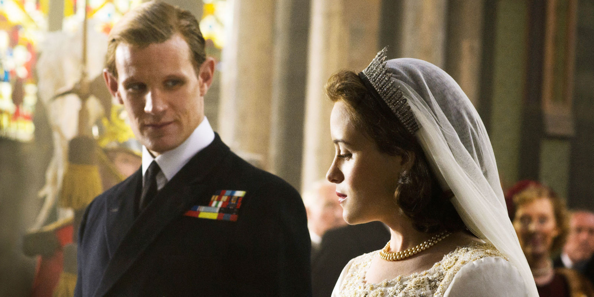
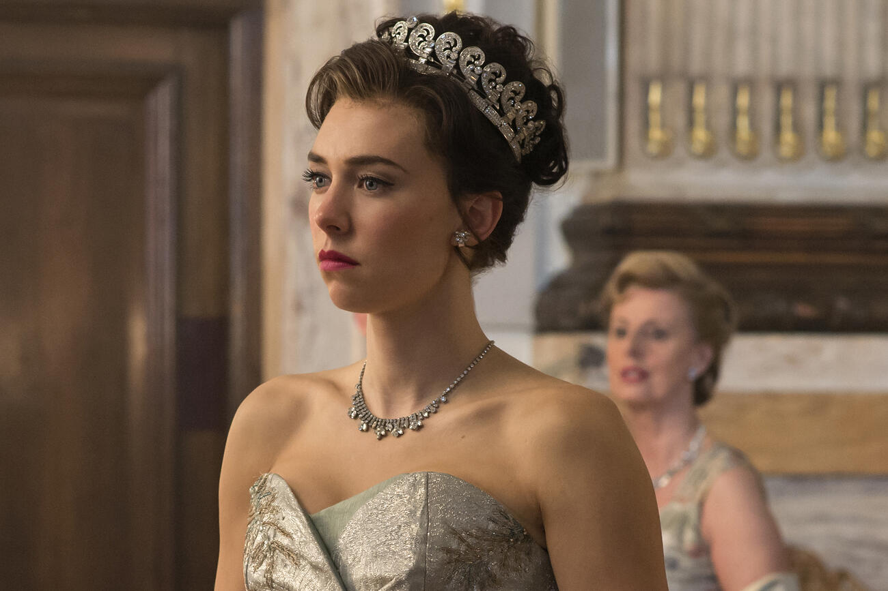
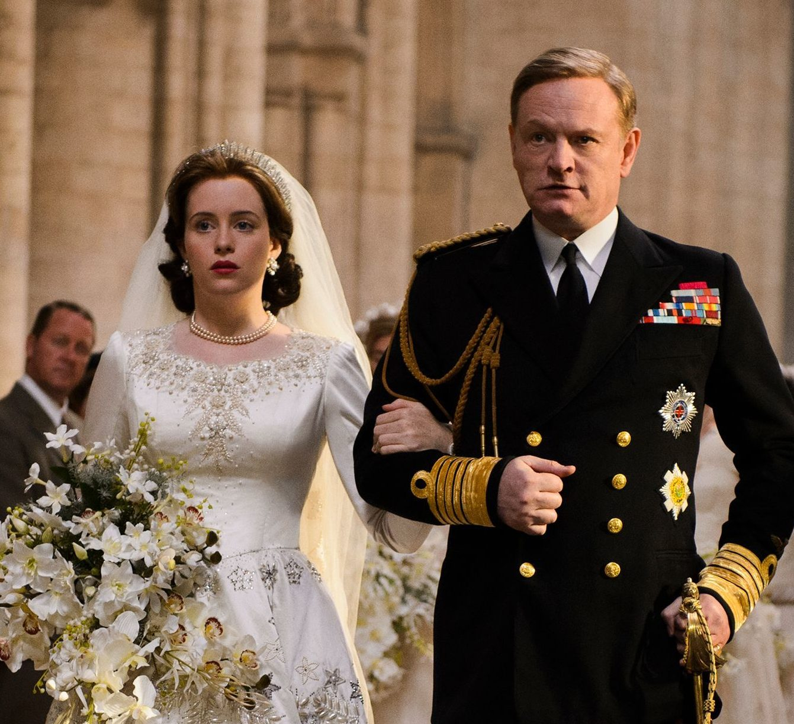

STORY LINE
This show focuses on Queen Elizabeth II as a young newlywed faced with leading the world's most famous monarchy, while forging a relationship with legendary Prime Minister Sir Winston Churchill. The British Empire is in decline, the political world is in disarray, but a new era is dawning. Peter Morgan's masterfully researched scripts reveal the Queen's private journey behind the public façade with daring frankness. Prepare to see into the coveted world of power and privilege behind the locked doors of Westminster and Buckingham Palace.
TITLE : THE CROWN
DIRECTOR : Benjamin Caron
STARS
Claire Foy
Olivia Colman
Imelda Staunton
Matt Smith
Tobias Menzies
Genre : DRAMA
AGE RESTICTION : 13V
DURATION TIME : 1h:10 min
a brief synopsis of the movie
Follows the political rivalries and romance of Queen Elizabeth II's reign and the events that shaped the second half of the twentieth century.
SHOWING TIME12:30am
DATE2 february2021
  